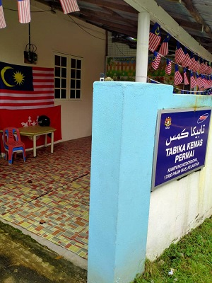
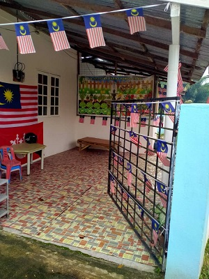
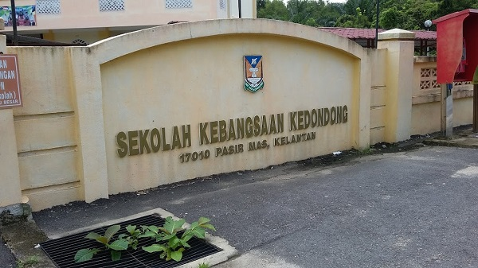
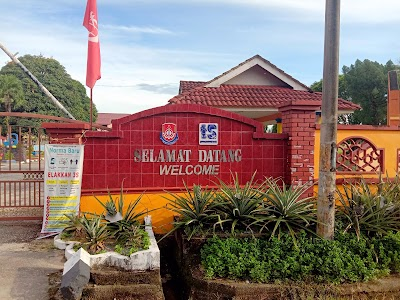
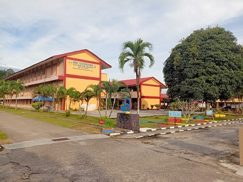
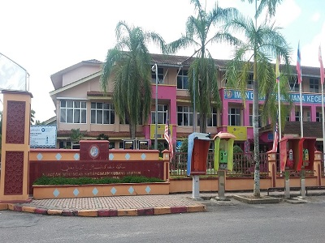
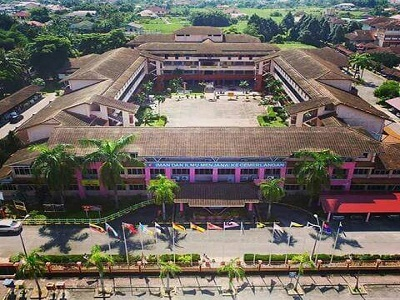
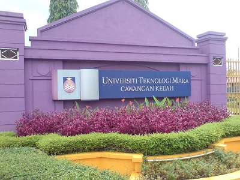
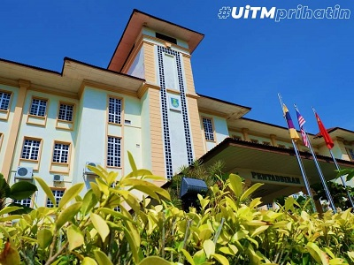

EDUCATION
~2007-2008~ Tadika Kemas Permai
 I started school at the age of 7 in a Kemas Permai kindergarten in Kampung Kedondong, 17000 Pasir Mas, Kelantan. I studied there for a year before continuing my studies in primary school.
~2008-2012~ Sekolah Kebangsaan Kedondong (SKKd)
I attended primary school at Sekolah Kebangsaan Kedondong. The distance between the primary school and the kindergarten is very close. I spent 6 years there before continuing my studies to secondary school. I got 3A 2B in Ujian Penilaian Sekolah Rendah (UPSR).
~2013-2017~ Sekolah Menengah Kebangsaan Kedondong (SKMKd)
 I went to high school at Sekolah Menengah Kebangsaan Kedondong. From SK Kedondong to SMK Kedondong is also very close. It takes 5 years to finish the studies. In form 4, I took the pure science, stream up to form 5. I got 3A 2B 1C 1D 1F in the results of Sijil Penilaian Malaysia (SPM).
~2018-2019~ Sekolah Menengah Kebangsaan Kubang Bemban (SKMKB)
 Next, I was able to continue my studies to form six at the Sekolah Menengah Kebangsaan Kubang Bemban located at Jalan Pasir Mas-Meranti, 17000 Pasir Mas, Kelantan. I got into the science stream. I went to school there for a year and a half. I got a 3.00 CGPA in STPM.
~2020-Now~ Universiti Teknologi Mara Cawangan Kedah (UiTM Kedah)
 I accepted an offer to continue my studies to the degree level in Bachelor of Information Science (Hons) Library Management.